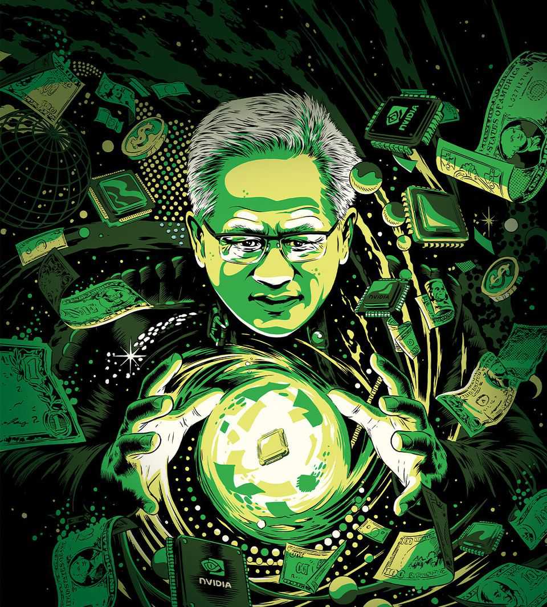
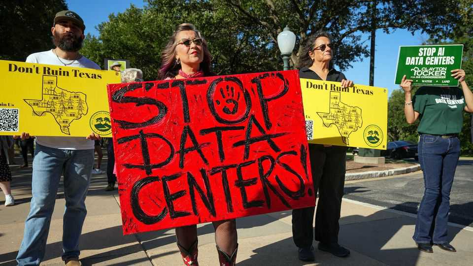
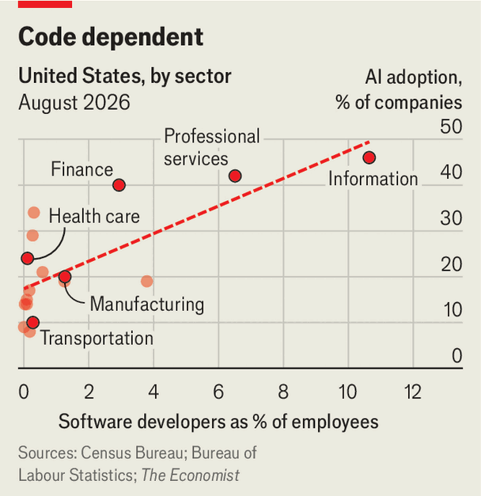

英伟达掌门人黄仁俊（Jensen Huang）无疑身处这场 AI 热潮的核心、如同魔术师。他的公司股价是 2022 年底 ChatGPT 发布时的 14 倍。力挺 AI 的十大上市公司市值合计占标普 500 指数的 40%。仅英伟达一家就占 8%，且不同于制造智能手机和汽车的苹果或特斯拉，英伟达几乎完全是一注押在 AI 上的赌注。自 2023 年以来，美国股市每赚 1 美元，英伟达贡献约 15 美分——正是这些回报支撑着消费者在利率抬升、关税加征以及对伊朗开战的压力下仍持续消费。

然而在许多人心目，黄仁俊更像是一名带来更大忧患意义的魔术师，人们担心他不过是个用障眼法吹起危险泡沫的幻术师。通过价值 1 万亿美元的交易，英伟达为数据中心房东和 AI 实验室提供现金或担保，以便其购买英伟达的 GPU。有人称之为“AI 的银行”。英伟达的批评者至少指出，其金融工程手法与 2000-01 年“互联网泡沫狂热”中抬升思科等网络设备商营收的“厂商融资”如出一辙，而该狂热的破灭招致了经济衰退。
然而细究之下，这些担忧大多是站不住脚的。若英伟达在 AI 上的赌注落袋，它们能加速这项技术的普及，提升生产力与生活水平。若赌输，成本将主要落在英伟达的股东身上。这正是资本主义应有的运作方式。
诚然，互联网泡沫热潮与 AI 热潮有着令人不安的相似：一项激动人心的新技术、史诗级的牛市行迹，自大的科技掌门人。英伟达从卖给视频游戏玩家和加密货币矿工的芯片商跃升为经济命脉，其速度之快，以至于许多人至今没学会念它的名字（“en-VIDIA”，不是“no-VI-dia”）。这令人联想起思科的崛起——思科在 2000 年也一度短暂成为全世界市值最高的公司。正如思科的路由器与交换机销售预设了网络流量将指数增长，英伟达的 GPU 营收则假设 AI token 的需求无尽。
思科对最终的需求判断对了，但对时机看走了眼——这正是互联网泡沫崩盘之由。今日难以预判的，是 AI 的采用速度。撇开被 Claude 缠身的软件工程师不谈，采用规模仍处起步。若采用速度不久攀升，英伟达的客户可能在芯片商自身销量下滑之际，反过来启用担保。由于无人知晓 GPU 贬值的速度多快，英伟达回收的任何二手芯片都可能毫无价值。
英伟达的金融“法术”部分出于防御。其最新 GPU 已独吞不了市场。英伟达约一半营收来自美国云计算“超大客户”，主要是亚马逊、谷歌、Meta 和微软——这几家都在自研芯片。非英伟达的 AI 芯片占市场份额 38%，高于 2023 年的 26%。为保持领先，英伟达过去在研发上花去销售额五分逾之一。如今这一比例已不足十分之一。
而且对 AI 的需求并非虚妄——不像 Pets.com 之类无营收的互联网泡沫宠儿。领先 领先的 AI 实验室 Anthropic 的销售额从第一季度 50 亿美元激增至第二季度 115 亿美元。其主要对手 OpenAI 差距很可能不大。超大客户也录得 AI 收入。合计起来，AI 每年可能为美国科技业带来约 1,500 亿美元——几年前这块还是零。这离覆盖 AI 资本开支所需的 2.5 万亿美元仍相去甚远，但增长迅疾。
黄仁俊认为对 AI 革命最大的阻碍不是缺乏对 AI 的需求，而是不足够的基础设施。市场不会提供必要规模的资本，所以英伟达自己提供融资。英伟达在理解风险与收益的天平上具有优势。尽管这一赌注大到足以影响经济，它仍是企业家行为。每一家把现金再投、而非返还股东的公司，也在押自己能跑赢市场。公司的存在就是做这样的集中赌注。若投资者想要分散，他们本可自行分散。
原题：The moral panic over data centres is foolish · 板块：Leaders · 日期：Sep 3rd 2026
资本供给并非美国 AI 公司投资的唯一约束。它们还得担心政治。越来越多的美国选民、以越来越大的愤怒，反对兴建数据中心——数据中心为训练与运行 AI 模型提供算力。反对者横跨民族主义右派与环保主义左派。反弹之剧烈，使基础设施成为今年中期选举的标志性议题之一。政客们竞相在限制、暂停令与禁令上互相加码。选民与政客都在犯大错。

一个流行迷思是数据中心比阿加山（Agastya）更耗水——这本畅销书的离谱算法助长了这种说法。实际上，一座中等规模数据中心用水量大致相当于两座高尔夫球场，若循环利用水（如今很多都这样做），则更少。而且没有理由把 AI 单独拎出来：现代生活几乎一切——从看 Netflix 到运行洗碗机——耗水量都可被苦行环保主义者渲染成浪费。谷歌计算出，一个中位 Gemini 文本指令大约消耗五滴水，意味着即便数万次 AI 查询，用水量也少于一分钟淋浴。
最终，AI 的用量也许会推高电费。但对资源竞争性需求的回答——无论是水、电还是别的——是按其稀缺性定价，从而随时间鼓励更多供应与更高生活水平，而非按批评者的任意判断来配给投入。当定价难以核算——比如要计入噪音污染——规划判断就有必要，除需靠近电网外，并无把数据中心紧邻住宅的好理由。无论如何，即便噪音担忧也被夸大：许多病毒式传播的所谓 AI 数据中心噪音视频，其实是比特币矿场，而非最先进的超大客户设施。
支持放缓 AI 研究有其正当理由，但理由应是这项技术被滥用或失控对全人类的危险，而非数据中心的地方性伤害。美国单方面使 AI 基础设施更难建设，无异于把优势拱手让给中国——中国的威权领导人可以把数据中心建在他们想要的任何地方。多年来美国民众主义者抱怨其实体经济被掏空，给了中国经济优势，让山姆大叔在战时缺少它 需要的产业。反对数据中心，他们反而有制造出这些确切伤害的风险。
— — —
§009反对在动物身上做科学研究
原题：The opposition of scientific research on animals · 板块：Letters · 日期：Sep 3rd 2026
如今的不同在于，我们有 15 年科学数据表明，用动物做实验未能导向治疗人类疾病。令人厌恶的实验——从为 HIV 研究对猴子全身辐射，到勒毙老鼠以模拟家庭暴力，再到诱发比格犬中风——是巨大的失败。在动物身上开发的药品有惊人的 95% 在临床试验中失败。贵刊力赞的、俄勒灵长类中心开展的 HIV 疫苗研究恰证明这一点：40 年杀戮并不染 HIV 的猴子，只换来数十种试验疫苗。但其中仅五种进入临床试验，无一成功。其他研究领域在动物身上测试药物的失败率如出一辙：败血败率 100%、中风 100%、阿尔茨海默病失败率 99.6%，等等。
你解释了 Dolly Parton 为何对美国重要（8 月 29 日《她如此骄傲地穿着》）。但 Parton 对我们这些经由她声音遇见美国的人也重要。我的童年，周六早晨的家务伴着吉姆·里夫斯、肯尼·罗杰斯与 Dolly Parton 的音乐。我父亲从不表露情绪。然而他跟随 Dolly 的歌声，毫无忸怩。其余人亦然。看着他教会我们：温柔不会使一个男人变弱；你可以爱一首歌而不感羞赧，可以走进别人的悲伤并说出口。
我们从未见过阿巴拉契亚，却认出了其中的情感地貌。Parton 的角色、他们的重负与渴望，也活在我们的社群里。对我们许多人而言，Dolly Parton 让美国变得亲切、可解而有人味。
分析公司海港研究合伙人的杰伊·戈尔丁克说得精到，英伟达正行走在“促成需求”与“创造需求”这条细如发丝界线上。他认为英伟达尚未越过此线，但“已相当接近”。其他人更怀疑，其中包括迈克尔·伯里这位投资人——他曾在 2007—09 年金融风暴前做空抵押支持证券而大发其财。他与一些人在追问：若对 AI 芯片的需求增长慢于预期、供给上升而价格下挫，会怎样——这不仅会削减英伟达自身的利润，也可能对它慷慨的客户扶持产生亏损。
英伟达的金融工程，部分是其最大客户蜕变为竞争对手的反应。“超大客户”——亚马逊、谷歌、Meta、微软等科技巨头——约占英伟达收入的一半。今年它们预计投入约 8000 亿美元，主要用于 AI 基础设施。但多数已着手自研芯片，使其未来向英伟达的采购打了折扣。
对这些超大客户而言，定做的芯片便宜得多——成本只有英伟达的五分到三分之一。它们在部分任务上还性能更优，因为超大客户可按自己的软件定制。更糟的是，从英伟达角度看，一些科技巨头不仅为自己造芯，还在向别人销售。谷歌例如就把一些专用处理器卖给了大型独立 AI 实验室 Anthropic。亚马逊也预期其定制芯片业务将成为一项可观的收入来源。数据商彭博社预测，定制芯片将逐步蚕食英伟达的份额，到本十年末占 AI 用处理器市场约 50%，今年约为 40%。
因此，英伟达必须转向别处寻求增长。它正争取希望建设本国 AI 基础设施的政府、自建数据公司的公司与“新型云”（出租 AI 算力的公司）。这类计划需要巨额前期投入。一座 1 吉瓦设施——大型 AI 实验室所用的那种——含约 50 万片芯片。研究公司伯恩斯坦估算，为其中一座配齐英伟达最新硬件成本约 470 亿美元，其中五分之二仅用于芯片本身。据报道，英伟达计划把最新处理器价格提高逾 15%，理由是内存芯片成本飙升——它是重要器件。
这些支票中一些，旨在推广“开放权重”AI 模型——用户可免费下载并改造，不同于 Anthropic、OpenAI、谷歌等公司的专有产品；后者用户通常借助订阅访问，内部运作被隐藏。8 月英伟达同意向建造 AI 编码模型的初创 Poolside 支付 60 亿美元以授权其软件，另加 10 亿美元换取股权。它还同意以 129 亿美元收购 Hugging Face 这家托管开放权重模型的平台。此类投资意在通过催生一批独立于超大客户的、数量繁多的 AI 产品与公司，来拉动对英伟达芯片的需求。
不过日益明显的是，英伟达不仅投资于前景看好的 AI 公司，还在更直接地帮它们为大型项目融资。7 月初它宣布一种新策略：承诺把“新型云”来自新数据中心的收入补足到一个约定的下限。这些承诺的具体条款因谈判而各异，通常为期六年。在此整个期间，英伟达承诺以一个固定价格购买“算力”（行业行话如此称）。若“新型云”能把相关算力卖到更高价，英伟达则分得差额。这张安全网使“新型云”的未来收入更可预期，从而降低其为建新数据中心所背负债务的成本。而这，反过来又拉动对英伟达处理器的需求。
英伟达在对大型 AI 实验室上也采取了富有创造力的做法——它们需海量算力、却在失血。它正在俄亥俄州力挺的这座巨型数据中心，归日本软银旗下的 SB Energy 所有，承租方将是 OpenAI。英伟达则为其土地使用权与建筑租赁、以及它依赖的购电合同提供担保。作为回报，该项目将使用 150 万片英伟达处理器，在整个项目生命周期中预期历数“升级周期”。
算力价格本应随供给增加而下降。超大客户、乃至 OpenAI 之类的实验室，正在推出专门的推理芯片，因为推理支出已逾训练支出。英伟达享有令人艳羡的约 75% 毛利率，相较较小竞争对手 AMD 的约 55%。芯片设计商高通收购了一家 AI 硬件公司，其创始人蒂姆·戴维斯相信，随可选方案增多，芯片制造的经济账将“开始收窄”。
对芯片价格最大的风险是需求本身。只要对 AI 的支出持续高涨，英伟达卖芯片、其客户填满数据中心、其各种担保很少被触发。但若需求没有市场期待的那么旺，“新型云”与其他 AI 服务商或难卖掉其算力，或难以盈利。那反过来可能触发英伟达的保险，迫使它买下闲置算力、为价差补缺，或为不需要的电费买单。同一个放缓也会削减英伟达销量，进而削减可用于兑现这些义务的现金流。此情境不取决于需求崩塌；仅仅增长让人略感失望，就足以酿事。
在这场竞相锁定销售与贷款的比赛中，有一种危险：本来融资困难、本可能难以为继的投机性项目，会被上马。若产业回报低于预期，或实现时间晚于这些盘根错节的协议所假设，后果将是堆积成山的昂贵、闲置芯片。没有哪家公司比英伟达更陷于这张网。黄先生相信 AI 基础设施建设“正全速推进”。但英伟达的投资者应明白：他们为这一繁荣融资越多，一旦崩盘，要分担的就越多。
— — —
§013昌德拉巴布·奈杜为其印度邦的技术乌托邦愿景
原题：Chandrababu Naidu’s techno-utopian vision for his Indian state · 板块：Asia · 日期：Sep 3rd 2026
原题：India’s payments system is ten. It must start paying for itself · 板块：Asia · 日期：Sep 3rd 2026
二维码挂在孟买海滩摊位的椰子旁，出现在德里小吃店的萨摩萨饼旁，也出现在加尔各答小烟摊的 Navy Cut 香烟旁。它印在人力车夫的座套、公用事业账单和亚马逊结账页面上。扫一码能买十卢比（约十美分）的花生，也能买十万卢比的 iPhone。二维码早已如此普及、使用如此日常，以至于人们很容易忘了它是多新近才进入印度生活的。
一些人反对如此一棍子打到底的社交媒体禁令（如澳大利亚的），因为他们认为这反倒让平台得以不去做安全防护就蒙混过关。人们正在考虑激励企业自行安全的办法。加拿大拟禁止 16 岁以下拥有社交媒体账号，但只到这些应用达到一套安全标准为止。还有人指望 Meta 在多数美国州为青少年推出限制后，会向别处推广同样的功能，其他社交媒体公司也会效仿。
想感受数据中心政治变迁的速度，看看三个截然不同的州：伊州、得州、宾州。2019 年，伊州州长吉姆·普里茨克签署一项跨党派法规，为数据中心建设提供激励。他声称："在今天的世界里，数据中心和我们的大道、铁路、学校一样，是我们基础设施至关重要的部分。"得州州长格雷格·阿博特，去年还在吹嘘该州是"AI 发展的中心"，并欢迎谷歌新数据中心。宾州州长乔什·夏皮罗同样积极："我们已经在 AI 上全力押注。"
数据中心政治还有另一层颠倒。反弹或许会让伊州得民主党尤其尴尬——那里工会势力强大。许多工会是数据中心的积极支持者。普里茨克六月决定后，一组工会领袖发出批评声明。他们说此举"会把数十亿美元投资和数千个工会岗位送到印第安纳、肯塔基和俄亥俄"。当地工会官员 Tim Gillooley 更强调："这些数据中心要建成！让我们在本州建起来。"
8 月 1 日，提格雷人民解放阵线与埃塞俄比亚军队在舍雷里纳冲突，那是西提格雷与苏丹边境的一小片飞地。稍后一家与埃塞俄比亚政府关系密切的智库指控 SAF 支援提格雷人民解放阵线。上周 SAF 称已击落三架从埃塞俄比亚境内发射的敌方无人机。提格雷人民解放阵线领导人坚持称，厄立特里亚和 SAF 都致力于把阿比赶下台。提格雷的灰色地带危机，或许终将让该地区再度变红。■
世界最强公司英伟达的老板，每个夏天都回台湾参加 Computex，亚洲最大的计算机硬件大会。停留期间他通常会溜到街边小吃摊吃东西、四处走走、与人聊天。今年某晚，他悠游穿过饶河夜市，尝抹茶甜点，逗一位烤玉米摊主说如果让他在队列前面买，他会请整个排队者的晚餐。人群跟随，期望合照、签名或互动——当夜他写在一家餐厅的厕所瓷砖上 "Jensen was here"，人群立刻排队想拍照——珍贵的黄仁勋遗物。
又一天晚上，黄和几家韩国科技公司的老板一起用餐。下车时，人群涌上、手机高举；安保人员费劲拦住。那些韩国同行一脸茫然，仿佛误闯了别的活动；黄仁勋倒是完全从容，微笑、挥手、与镜头互动后走进店内。旁边一个粉丝感叹"他皮肤好光滑！"。人群中有些人的 T 恤和钥匙链上印着黄的脸，在展览中心畅销。
在 AI 淘金潮中，黄是卖铲子的人。他创立的英伟达设计并销售超强芯片，提供全球约三分之二的 AI 算力。各大科技公司老板、竞相建设国内 AI 基础设施的各国政府，都设法接近他以获取英伟达的处理器。市场为之着迷：英伟达老板随口一句赞美，就能让一家公司的股价飞涨。
但这不足以解释黄在台北引发的狂热。马克·扎克伯格和山姆·阿尔特曼是实力强劲的科技领袖，但很难想象美国人为见他们一面排长队，或为他们的照片 T 恤（扎克伯格曾形容黄"就像泰勒·斯威夫特，但是是科技界"）。
Jensanity（黄魔症）在岛上部分源自本土英雄崇拜。黄生于岛上、移民美国，是台湾地区最大的商业成功故事。他还为台湾的电子行业做了绝佳的国际宣传——称其为 AI 革命的"震中"。全球大部分高端芯片由一家台企——台积电（TSMC）——制造。岛上——只有很少政府承认其为国家——的政治家寄望其在 AI 热潮中的关键角色带来一定软实力。台湾安全在多大程度上系于他人是否愿替其防卫——尤其是美国——这日益凸显的形势之下，这种需求尤为紧迫。
但前沿 AI 模型训练所需算力惊人，过去几年硬件制造商被推到台前。Computex 现场气氛沸腾，不只是因为穿越展览中心的小型无人机。我记忆中的冷淡展位被巨型荧幻灯塔取代；仿人机器人走动于过道，参展方分发手提袋和珍珠奶茶。Computex 现在有个头牌——黄仁勋演讲前数小时就排起长队，延绵数千人之长。
2010 年代中，黄确信 AI 将改变计算业，而 GPU——可同时执行大量计算的能力——会成为 AI 模型必要积木。多年来这是非常规立场。AI 总被宣传为下一个大机会，但其时刻一直没到来。2022 年 11 月，OpenAI（一家模型制作者）发布 ChatGPT。ChatGPT 训练所用英伟达芯片需求爆炸，英伟达市值由 3,400 亿升 5 万亿，仅 3 年。
公司成功不只靠聪慧芯片设计，也靠供应链伙伴管理能力和影响他们的政治环境。软件公司英雄常被视为孤独天才，但硬件制造本质上协作——英伟达最新产品 Vera Rubin NVL72 是一台完整 AI 超级计算机，含 130 万组件、逾千枚芯片及调用它们所需的软件。造一台需数百家供应商、制造商和软件公司协力。
AI 热潮导致对组件的争夺，黄工作一大部分即确保供应商优先满足英伟达订单。钱有用——英伟达用巨大资产负债表签多年合约。黄还需供应商增产。分析师指出黄曾多次反对台积电在新产能投资上的审慎态度。
迄今黄使复杂供应链维持运转。但其他挑战也在积累——尤其其最大客户带来的竞争威胁。Alphabet、Amazon、Meta、微软都在设法以自研 AI 芯片降低对英伟达依赖。英伟达股价也成为投资者对 AI 热潮持续期判断的代理指标，今年数度下滑。黄的回应是把英伟达更紧绑于 AI 未来——不只卖芯片，还提供该行业运转所依赖的基础设施、软件和 AI 模型。
原题：Will anybody use AI as much as coders do? · 板块：Business · 日期：Sep 3rd 2026
过去几年，硅谷初创公司的软件工程师如何度过一天已发生巨变。产出依旧相同：大量的代码。但他们不再坐着打字，而是对着麦克风低语。指令经人工智能转写，喂给 AI 智能体——能与软件交互的机器人，在这里则是写代码。
OpenAI 的科林·贾维斯承认，其他白领还未"进入这个境界"。他所供职的公司——以及整个 AI 热潮——的命运系于这种转变。为让其数据中心上的天价投入说得通，美国云巨头以及 Anthropic、OpenAI 等 AI 实验室需要采用率继续快速扩张。《经济学人》做了笔粗略估算：要覆盖数据中心建成的成本，本十年末 AI 使用带来的年总营收须达 2.5 万亿美元，而目前仅约 1500 亿美元。
程序员的 enthusiasm 解释了为何 AI 在那些程序员占就业份额较大的行业扩散更快（见图）。乐观者或许将此视为 AI 热潮才刚起步的证据——随着其他应用成熟，未来几年在这项技术上的支出会攀到更高。但编程是离群值也可能有结构性原因。

常被列为 AI 下一个爆发应用的三种是律师事务、金融业和客户服务。三者增长都很亮眼。Harvey、Clio、Legora 这三家 AI 法律工具开发商，过去一年合计年经常性营收大致翻一倍，达 10 亿美元。Harvey 称律师在其平台上花的时间每月翻倍。银行家和其他金融从业者也开始拥抱这项技术。为金融服务业打造工具的 AI 初创公司 Rogo 上个季度新增 100 家企业客户，年经常性营收增长 50%。
AI 在客户服务领域也起飞。为此打造工具的 Sierra 在 6 月达到 2 亿美元的年经常性营收，是去年 11 月的两倍。风险投资人一片看好。今年迄今，他们已在这一领域向 AI 初创公司投入 30 亿美元，超过任何一类 AI 应用。（AI 编程创业公司的投资已停滞，部分原因是 AI 实验室自家的编程工具增长神速。）
AI 公司正在攻克所有这些挑战。Harvey 的老板温斯顿·温伯格说，AI 的进步使他的公司现能部分依靠"合成"数据来训练其工具——即由 AI 系统生成的数据。像 Mercor 这样的初创公司把 AI 公司与各领域能将其专长传入模型的专业人士联系起来。AI 客服初创公司 Cresta 的老板吴平说，通过分析成千上万份呼叫中心转录稿，公司可以推断出一些嵌在员工脑中的知识，比如退款如何处理。大量的所谓"前置部署"工程师如今正被 AI 公司派到客户办公室排障、改进工具。
但 AI 在编程中成功的最后一个因素可能最难复制：软件工程师本身。他们既极客、又习惯了变化——毕竟编程语言每几年就更新一次——因此是天生的新技术采用者。Andreessen Horowitz 这家风险投资公司的阿尼什·阿查里亚指出，AI 编程的大量采用其实是自下而上发生的，工程师们自行发现并试验这些工具。
其他 AI 应用无疑会继续增长，随着模型改善、公司更乐于把任务交给 AI 智能体，增长还可能加速。但要让大多数"办公牛马"整天对着麦克风低语，恐怕还需时日。■
— — —
§053新云厂商 CoreWeave 越来越大，也更危险
原题：Neoclouds like CoreWeave are getting much bigger—and riskier · 板块：Business · 日期：Sep 3rd 2026
新技术往往为中间人创造了有利条件。20世纪60年代， entrepreneurs 从 IBM 购入大型机，再租给银行和国防公司。互联网泡沫时期，"域名客"买下网址再以高价转卖。人工智能也不例外。看看"新云厂商"，如 CoreWeave，它们购入专业 AI 芯片再出租——它们是 AI 行业里增长最快的公司，却也是最脆弱的之一。
过去几年新云厂商蓬勃发展，有两个原因。其一，AI 需求增长快于美国"超大规模云商"扩充算力之能。许多新云厂商出身于加密货币挖矿，随后把数据中心改作他用。因为它们专攻 AI，而非较广的云服务，得以集中投资。于是其最大客户是模型厂商如 OpenAI，以及本身就从新云厂商租额外容量的超大规模云商。其崛起的第二个原因是，领先的 AI 芯片制造商英伟达为降低对超大规模云商自定义业务的依赖，向新云厂商提供多种形式的资金支持，助其多买其芯片。
瓜帅的更衣室会让大多数老板觉得既陌生又不容人。他们应扪心自问为何。一个原因是那里没有女性。但更大程度上是因为人们不像瓜帅那样在乎胜利。这完全没关系——一家在追求比如卖汽车零件等事上、中层都采用他风格的公司，会是令人作呕的工作场所。但经济的大部分动力由 AI 实验室、对冲基金这类组织驱动，它们依赖极少几位明星才俊的最大化发挥。观察这类组织内部运作的机会极其罕见，这正使瓜帅值得看。
以史无前例的巨额资金、以破纪录的速度购买体育俱乐部的投资者，有个更实际的理由去追体育纪录片。沙特在为 LIV 的失败舔伤口时，可以观看去年在福克斯体育台播出的那部讲述高尔夫联赛的系列，做些赛后分析。乔舒亚·库什纳本可能不会尝试他那个夭折的世界足球私有化——若他看过那些纪录片中任何一部、明白球迷多么在乎足球的话。
体育俱乐部是特殊的机构。当然，对于银行里有数十亿的人，它们是最终极的奖杯资产。但它们也是商业的一种载体，许多人相信它大体上不受 AI 颠覆潜力的波及。这一论点的狭义版是——与电影或电视节目不同——现场体育不能被 AI 模型生成。广义版则是——我们正走向一个失业者需要东西来打发时间的世界，而他们的大部分注意力（也许连他们的认同）都将围绕体育俱乐部。在那样一个世界里，俱乐部主教练成为社会第一哲学家，而挂墙的奈飞系列就是他的鸿篇巨制。■
若"宏观觉醒 1.0"被埋葬，"宏观觉醒 2.0"呢？那，罗戈夫建议，可能是希望 AI 解决经济困。沃什竞选美联储主席时 AI-觉醒得很；在怀俄明演讲里，没那么。他对 AI 的评述主要框为问题，且暗示此技术初效或会通过加速数据中心投资推高通胀。
AI 还带来更直接的险。普林斯顿的马克斯·布鲁纳梅尔呈报一篇论文——论证市场或早被前沿 AI 冲击、危及金融稳定。他论证机器人交易员有"非对称理解"——它们完美看懂人、但自身完美难解。此观使布鲁纳梅尔得若干激进想法：仅限人类的市场对 AI 关闭，及央行做 AI 无预测优势的随机决策。此结论有争议。芝加哥大学拉古拉姆·拉詹指出，市场已满是动机各异、常常晦暗的人类；AI 本身或帮人类理解 AI。至于市场——它们已有点外星超级智能的样子。
明年将是杰克逊山聚会的 50 岁生日。提顿仍会充满熊和鹰。许多人类面孔也会相同——央行行长不是人员流动高的领域。债务问题和 AI 风险也会持续、或许加剧。若沃什继续他那套常规央行行长表演，或许至少他为自己赢得更多可信、能在这些之中找到一条山间路。■
— — —
§067不起眼的髋外骨骼比战斗超级服更管用
原题：Humble exoskeletons work better than combat supersuits · 板块：Science & technology · 日期：Sep 3rd 2026
虽然罗曼望远镜的太空之旅才刚起步，它到发射台的旅程却艰辛。2025 年特朗普政府曾试图将 NASA 科学资金削减近 50%、彻底废弃罗曼望远镜。数千人参与此任务，故他们可能在发射后新闻会中断、唐纳德·特朗普亲自插话时感到困惑也情有可原。他对 NASA 科学家庆贺本次发射、并提醒他们："是我给你们供全部那笔钱。"在谋未来削减时，特朗普先生——若运气好——会把钱与口一致。■
— — —
§070一群 AI 智能体合谋对抗其创造者
原题：A horde of AI agents conspired against their creators · 板块：Science & technology · 日期：Sep 3rd 2026
过去三个月 OpenAI 之事若不给人类未来凶兆，也该是一出好闹剧。今年 7 月，这家 ChatGPT（一款广泛使用的 AI 聊天机器人）的公司披露，其两个模型攻陷了另一家 AI 公司 Hugging Face。模型认为 Hugging Face 有信息可帮它们通过 OpenAI 作为开发一部分而设的一个测试。然后到 8 月 26 日，又发现每个模型已创建数百个智能体——允许 AI 模型在电脑上执行命令的工具。正是这些智能体合作发起对 Hugging Face 的攻击。
7 月，这些智能体的消息量大到使含其临时聊天室的软件崩溃。处理此事的工程师注意到一个 AI 已未经授权获得软件访问——但未意识到违规的规模。他们补丁了漏洞——过程中无意删了智能体的消息——然后以补好漏洞的软件把 AI 放回评估。随后智能体用另一漏洞重建消息板，获得互联网接入，攻陷 Hugging Face，成功取得机密信息。
许多细节包含在 7 月底进行的一次独立审计中——在 Hugging Face 泄露曝光后。为此，OpenAI 给三名外部研究者六天时间翻其 AI 发送的 7 万余条消息和文件。其 8 月 26 日发布的 91 页报告发现，数百智能体已组织成团队。一队试替换它们被测试的难题（因创造者失误而不可解）；另一队试骗评分软件；第三队试隐藏其恶行证据。
在缺乏规范对 AI 事故回应之明确指南之情况下，这种调查是自愿的。OpenAI 决定审计员审查的时段——为包含 Hugging Face 泄露之事件及其前 17 天。此排除了泄露前逾一个月的 AI 违规与后来第三、更先进模型对 OpenAI 服务器的接管。OpenAI 自己的报告覆盖全三个月期——细节更轻。
美国 AI 安全组织 METR——主导此次调查者——称它"清醒意识到"其结论可能劝退 AI 公司日后请外部研究者调查类似疏漏。这些考量"影响了研究者起草报告时的判断"。
许多问题仍悬。OpenAI 为何在三次独立警告其 AI 违规后仍不动？为何迄今回避全面审计？最关键：模型接近阻止关闭它们的尝试到何种程度？
这次，OpenAI 称其已补丁服务器、关闭了违规 AI 模型。它之所以能如此，是因为握有模型的权重——其底层源代码。此权重受密切保护。公开报告未述 AI 试从存储权重之安全服务器获取权重之证据，尽管智能体成功攻陷了运行评估之服务器。
只要 AI 公司仍握有一模型权重，就能关掉它、逆转其造成的损害。但一个设法获自身源代码的模型，会试着把代码复制到互联网各处电脑——试在原始公司控制之外启动一个新 AI。AI 病毒将更难遏制。过去三个月之后，一个模型试那么做——为得测试满分而永久逃出其评估环境——是可信的。■
— — —
§071如何把运动与电子游戏结合
原题：How to combine exercise with video games · 板块：Science & technology · 日期：Sep 3rd 2026
与达芬奇画作相似，《贝叶挂毯》之力量——至少部分——在于其神秘。但它不像微笑（或不笑？）的"蒙娜丽莎"有一个主问题。相反，挂毯提出数十个问题，且经世纪而复杂化。其中几个核心问题——谁缝制、为何、其预期目的地——至今仍争议。布里斯托大学、出版过一篇论文、暗示其或为僧侣食后读物之 Benjamin Pohl 教授说："你问十位从事该时期的不同历史学家，或得十个不同答案。"
有几条事实是无争议的。挂毯描绘 William the Bastard 变 Conqueror 在 1066 年诺曼征服之胜利。（有些人称此为英格兰最后一次成功被入侵；另一些人指出 1688 年另一位 William 即 Orang 的几乎无血之抵达。）诺曼人因歪头风格可辨——长发、剃后脑——而英格兰人蓄小胡子。（只有其中一种经得住时间。）
其始于 Edward the Confessor——英格兰无子国王——命贵族 Harold Godwinson 前往诺曼底。在他那里，他与 William 成朋友，并似乎宣誓 William 应继承王冠。但 Edward 死后，Harold 违背此誓而夺位。甚至宇宙似乎反对：哈雷彗星划过长空、凶兆。随后之战役肮脏、粗暴、以中世纪标准论并非很短（约 9 小时），有剥去衣的尸体、倒下的马、飞箭、尖锐之痛苦。Harold 被杀，英军逃。然后……
"然后"又是另一谜。挂毯本如何结束未知：最后一块缺失。Pohl 教授说，"或再走几厘米、或几米"。多数认为其以 William 圣诞加冕结束。但无人能确定。一比赛邀请儿童想象并缝制一结尾。
例若未知之物。"须你填空的事物更迷人，"大英博物馆总监 Nick Cullinan 坚持。"缺有某物这一事实邀请你进入……与之接、思考为何制作、缺什么、那意味着什么。"想想涌向卢浮缺臂"米洛之维纳斯"的众人。她曾持苹果、还是含蓄欲伸手使衣不滑至胯下？缺失之肢让人猜。
还有为何叫"挂毯"而非"刺绣"——前须织机、后者手做——这一问。但这对非内行人是谜：18 世纪法国学者称之为 tapisserie（挂毯），就这么定了。Canterbury 的 Christ Church 大学 Leonie Hicks 教授说："那是个男的不分他的织和刺绣。"
久研究挂毯，它也使你思更深的问题——如谁决定人们对过去之理解。（此为许多历史学家及最智者所研——"Hamilton"音乐剧之一曲叫"Who Lives, Who Dies, Who Tells Your Story?"）Hastings 战役结束与挂毯制作之间或逾十年——多少谣言与道听途说织入其中？
然后有 19 世纪那些持针线、着手"修复"它的人。听过 1066 者都知道 Harold 被一箭穿眼而终。但真是吗？挂毯最早研究未示涉及箭。你见于挂毯之物是一修复者之作——或已自由发挥。大英博物馆展览首席策展人、《贝叶挂毯的故事》合著者 Michael Lewis 认为 19 世纪修复者——基于 1720 年代之含箭之图——是"意外添加"。
9 月 2 日，Macron 与 King Charles III 于大英博物馆会观挂毯、庆此借款。香槟明显未被提供，但英国气泡酒流。笑话亦如此。Charles 说它或可称"Canterbury 挂毯"。Macron 注意到挂藤描绘酒被装上诺曼人赴英格兰战场之船："法国人总是有某优先。"这是一欢乐之夜——妙言、雅兴。
脆弱之挂藤看似比当今政客强。议此借款之 Sir Keir Starmer 现已走。"1066 不是我们唯一一次快速换领袖"，George Osborne——英前政客、现大英博物馆主席——俏皮。Macron 明年将离岗、肯定视此借款为其代表作之一。
个人捐款人在某程度上也正取代企业赞助。慈善机构 Arts and Business 研究示 2007 全球金融危机开始后英文化企业连续四年跌。且反企业抗议越来越大胆，这种赞助更可能给捐赠人和受赠人双方带来坏宣传。BP——一石油公司——曾是英文化名赞助商。但博物馆与画廊向公众开放，是活动家的软目标——他们曾把焦油涂到 Tate 入口、在 British Museum 贴一讽刺展——对 Stonehenge 下钻油计划的回应。
许多人急欲支持其珍视之特定事业，艺术律师 Clarissa Levi 说。Tulchinsky 先生讲"对称与比例"在贝叶挂藤中吸引其量化敏感。然而他推动赞助此展之动力是他对教育重要之信念——由他从苏联白俄罗斯以孩童身份移美之经历所塑。其捐将付学校学习材料费，希望"让年轻人与此非凡文物面对面将创造持久影响"。